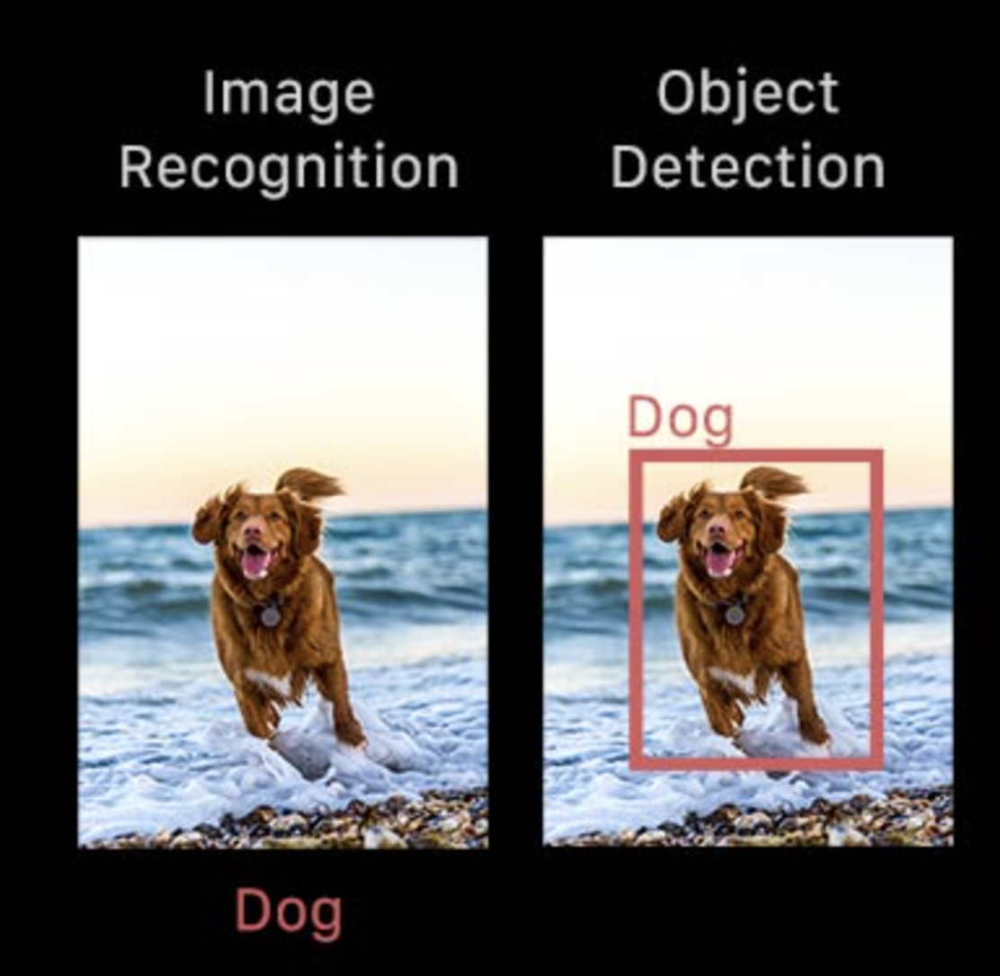
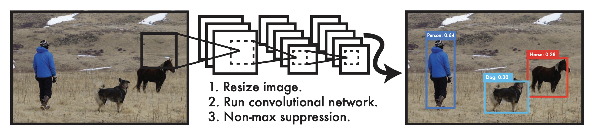

How detection works?
Object detection is the technique in Computer vision that is used to identify the required object and locate them in the provided image or the video. The object detection module will usually draw a square box around the object after locating in the image [3].
Before we proceed, I would like to clarify the difference between Object detection and Object recognition. The Object recognition will assign the label to the object while object detection will return True if object is detected in the image. There are two main object detection modes- Machine Learning based approaches and Deep-Learning based approaches.
In the Machine Learning based approaches, computer vision uses the methods like color histogram or edges and other various features of the image to identify the pixel clusters that belong to the objects. The deep learning-based approaches usually use the convolutional neural networks to perform the end-to-end unsupervised object detection in which the features are defined and extracted altogether.
The deep learning-based approach is used in most of the applications due to its flexibility and usability. Basic Structure of the Object Detection- The deep learning approach has 2 main parts, Encoder and Decoder. The encoder takes an image as inputs, passes through the CNN layers that learn to extract features. The output from the encoder is then passed to the decoder that predicts the bounding boxes and labels the detected object.
Most Used Algorithm for Object Detection- YOLO
The YOLO (You Only Look Once) is a famous and most used object detection algorithm that works extremly fast in manner. The base YOLO object detection works on 45 fps speed while smaller version works on upto 155 frames per second.

The YOLO Detection System-
Step 1) YOLO resizes all the input images to 448 X 448
Step 2) Runs a single convolutional network on the image.
Step 3) Thresholds the resulting detections by the model's confidence.